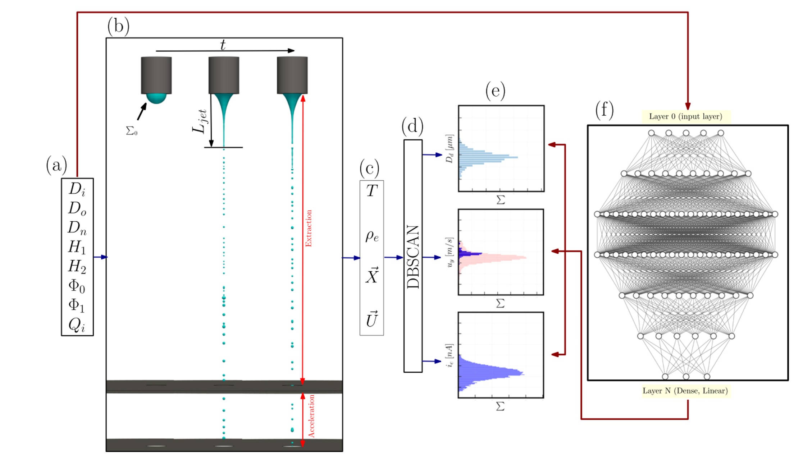
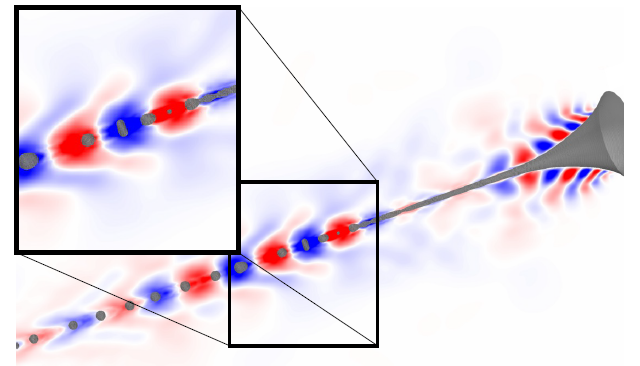
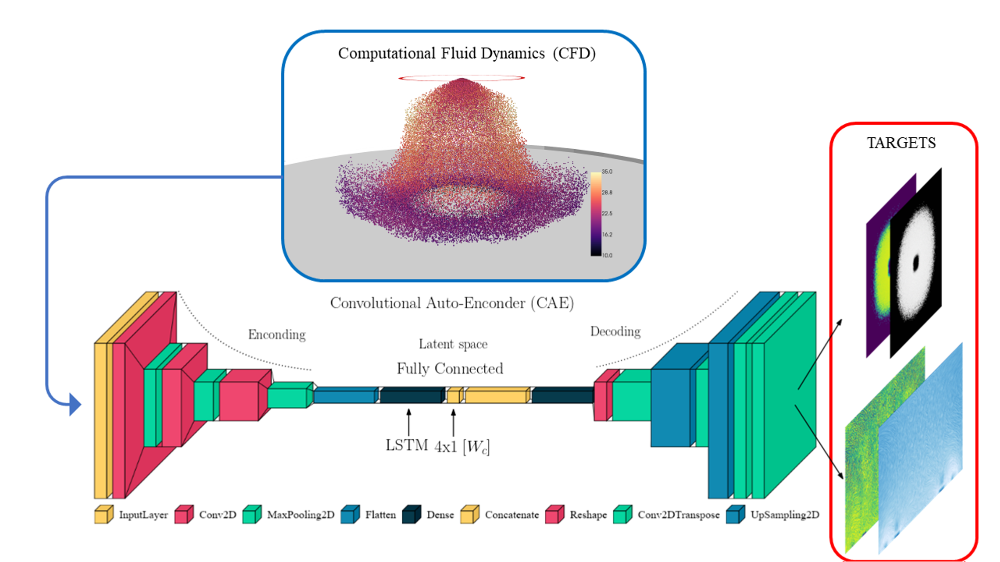

5. Applications of Data-Driven Surrogate Models
This section presents three applications of data-driven methods to the study of electrohydrodynamic flows and spray processes. These studies combine high-fidelity computational fluid dynamics (CFD) simulations, modal decomposition techniques and neural networks to reduce computational cost and predict the evolution of complex multiphysics systems.
5.1. Data-Driven Modelling of Multistage Taylor Cone-Jet Dynamics
In this work, surrogate models were developed to reproduce the temporal evolution of the different stages of Taylor cone-jet dynamics. The objective was to predict complete flow fields without performing a new three-dimensional CFD simulation for every time step or operating condition.
The methodology uses data obtained from high-fidelity multiphase simulations and dimensionality-reduction techniques to represent cone formation, jet elongation and the development of instabilities. The model learns a compact representation of the system, from which the physical fields of interest are subsequently reconstructed.
This approach makes it possible to:
- Significantly reduce the cost of new predictions.
- Reconstruct high-dimensional transient fields.
- Identify the different stages of cone-jet evolution.
- Accelerate parametric studies and optimization processes.
Publication:
S. Cândido and J. C. Páscoa,
Data-driven surrogate modelling of multistage
Taylor cone–jet dynamics
,
Physics of Fluids, 2024.


5.2. Modal Decomposition as a Surrogate Model for EHD Jets
Modal decomposition was investigated as an efficient alternative to full simulations of electrohydrodynamic jets. In this approach, the CFD results are decomposed into a reduced set of modes representing the dominant spatial structures of the flow.
The temporal evolution can be approximated through the corresponding modal coefficients, allowing the liquid interface, flow field and other physical variables to be reconstructed using a reduced number of degrees of freedom.
One of the central aspects of this work was ensuring that the reduced-order model preserved the physical consistency of the original simulation, including the conservation of electric charge throughout the cone-jet evolution.
The main advantages of this approach include:
- Compression of large CFD datasets.
- Identification of the dominant flow structures.
- Rapid reconstruction of transient dynamics.
- Reduction of the time required for analysis and prediction.
Publication:
S. Cândido and J. C. Páscoa,
On modal decomposition as surrogate for
charge-conservative EHD modelling of Taylor Cone jets
,
International Journal of Engineering Science
,
2023.
5.3. Deep Learning Applied to Electrostatic Painting
In this work, data obtained from three-dimensional CFD simulations were used to develop deep-learning models for predicting flows associated with electrostatic spraying.
The study evaluated the use of high-voltage conductors and the Nitrotherm technique, in which heated nitrogen is used instead of conventional air. The simulations included turbulent flow, transport of charged droplets, the electric field, evaporation and deposition on the target surface.
Models based on convolutional and recurrent neural networks were trained using the CFD results to identify the spatial and temporal patterns of the spray. An architecture based on a convolutional autoencoder made it possible to reconstruct the physical fields and predict deposition regions using only a fraction of the original simulations.
The methodology made it possible to:
- Predict velocity fields and spray patterns.
- Reduce the number of required CFD simulations.
- Rapidly evaluate new operating conditions.
- Support the optimization of paint transfer efficiency.
- Identify configurations with reduced overspray and improved deposition uniformity.
Publication:
M.-R. Pendar, S. Cândido and J. C. Páscoa,
Optimization of painting efficiency applying
unique techniques of high-voltage conductors and
Nitrotherm spray: Developing deep learning models
using computational fluid dynamics dataset
,
Physics of Fluids, 2023.
